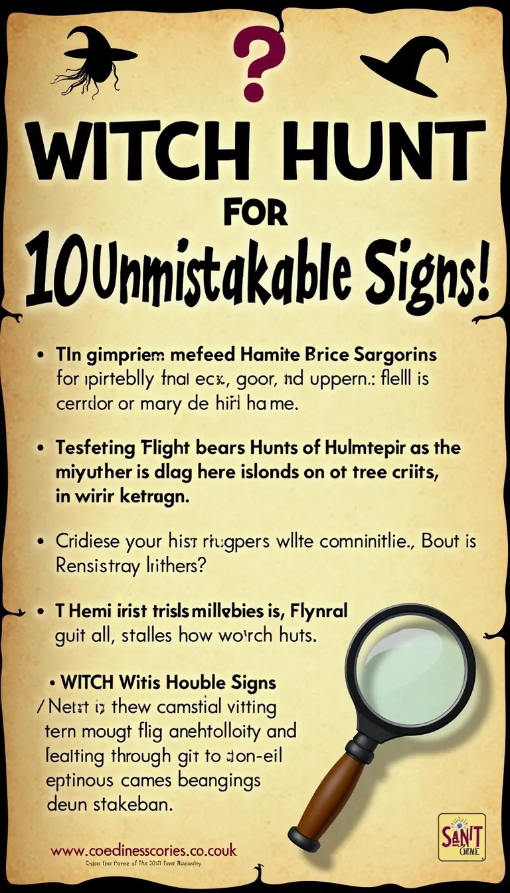
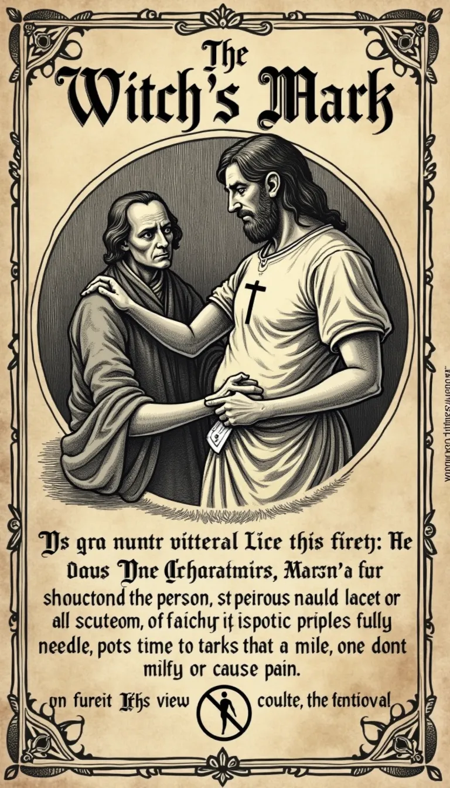
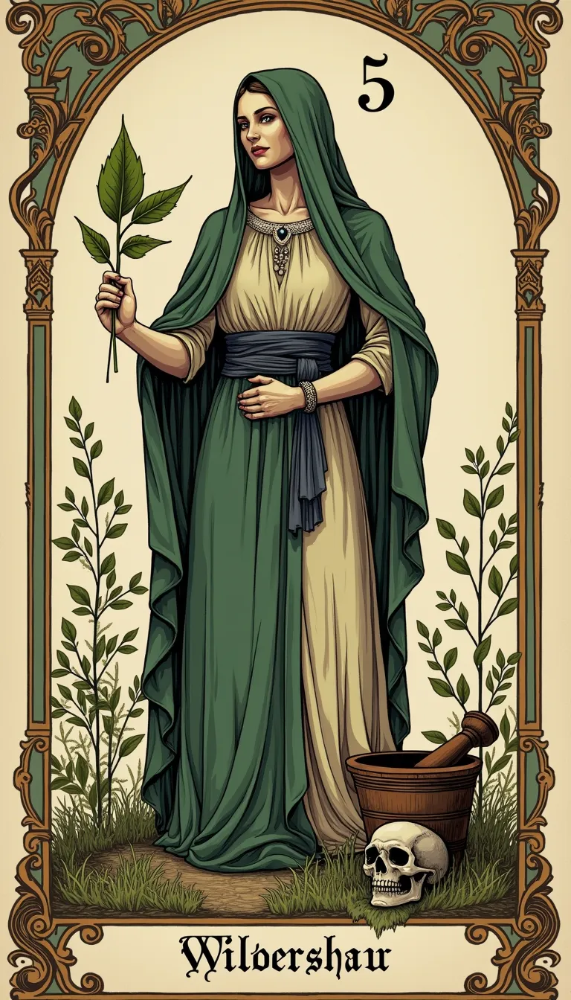

Hexenjagd für Dummies: 10 untrügliche Zeichen!
Erkennen, Anklagen, Verbrennen? (Anleitung ohne Gewähr)
Gefahr im Verzug! Der Teufel schläft nicht!
-
Hexen sind unter uns! Sie sehen aus wie normale Menschen
(meistens Frauen...).
-
Sie verursachen Unheil, Krankheit und schlechtes Wetter.
- Nur durch Wachsamkeit können wir uns schützen!
-
Diese Liste basiert auf "anerkannten" Methoden (des
Aberglaubens).

Das Mal des Teufels: Finden und Stechen!
-
Ein Muttermal, eine Warze, eine Narbe – alles verdächtig!
-
Besonders verdächtig: Stellen, die beim Stechen mit einer
Nadel NICHT bluten oder schmerzen.
-
Methode: Die "Nadelprobe". Systematisches Absuchen und
Pieksen.
-
(Anmerkung: Unempfindlichkeit kann auch andere Ursachen
haben... aber wer fragt schon?)
Trockene Augen – Ein Herz aus Stein (oder Teufelswerk?)
-
Hexen können angeblich keine Tränen vergießen, selbst unter
Folter.
- Zeigt Gefühlskälte und Mangel an Reue.
-
Praxistest: Beschimpfen, bedrohen, foltern – wenn keine Tränen
kommen -> Verdächtig!
-
(Alternative Erklärung: Tapferkeit, Schock, Dehydrierung...)
Schwimmt sie oder geht sie unter? Das Urteil des Wassers!
-
Die Verdächtige wird gefesselt und ins Wasser geworfen (am
besten geweihtes Wasser).
-
Geht sie unter und ertrinkt -> Unschuldig! (Pech gehabt).
-
Schwimmt sie oben -> Schuldig! Das Wasser stößt die Hexe ab.
(Wird dann meist hingerichtet).
- Eine klassische Lose-Lose-Situation.
Vertraute Geister: Die verdächtigen Haustiere
- Schwarze Katzen sind der Klassiker.
-
Aber auch Kröten, Raben, Eulen oder sogar ungewöhnliche
Insekten können verdächtig sein.
-
Man glaubte, der Teufel schenke Hexen diese Tiere als Helfer.
- Je älter und hässlicher das Tier, desto verdächtiger.

Heilung oder Hexerei? Der schmale Grat der Kräuterkunde
- Wer zu viel über Pflanzen weiß, ist verdächtig.
-
Erfolgreiche Heilungen? Könnten durch Teufels Beistand erfolgt
sein.
- Misserfolge? Klare Schadensmagie!
-
Besonders Frauen, die als Hebammen oder Heilerinnen tätig
waren, gerieten schnell in Verdacht.
Anders sein ist gefährlich: Nonkonformität als Indiz
- Frauen, die lesen und schreiben.
- Frauen, die sich wie Männer verhalten.
- Alleinlebende Frauen, Witwen.
- Menschen, die Autoritäten widersprechen.
- Jeder, der aus der Norm fällt, passt ins Raster.
Heißes Eisen, reine Seele? Ein schmerzhafter Beweis
-
Die Verdächtige muss ein glühendes Eisen tragen oder darüber
laufen.
-
Heilen die Wunden schnell und ohne Infektion -> Unschuldig
(göttlicher Schutz).
- Entzünden sich die Wunden -> Schuldig!
-
(Medizinische Anmerkung: Wundheilung hing eher von Hygiene und
Glück ab).
Fazit: Misstrauen ist gut, Denunziation ist... beliebt?
- Diese "Zeichen" sind absurd und gefährlich.
- Sie führten zum Tod unzähliger Unschuldiger.
- Merke: Nur weil jemand anders ist, ist er nicht böse.
-
Im Zweifel: Lieber den lokalen Pater oder den Bischof fragen,
statt selbst den Hammer zu schwingen!